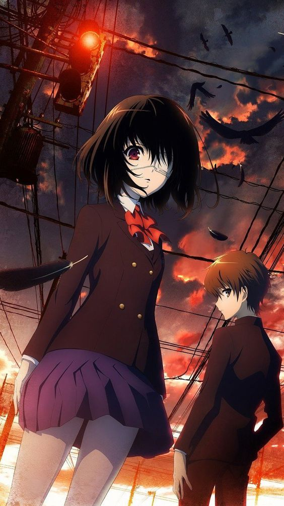
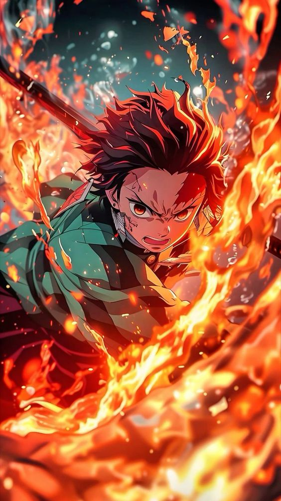
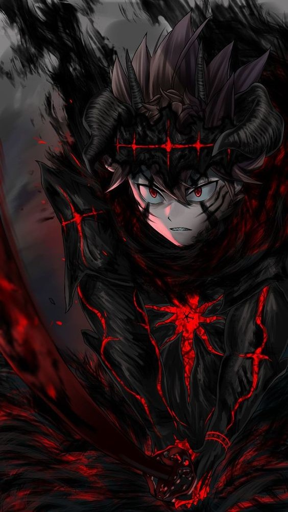
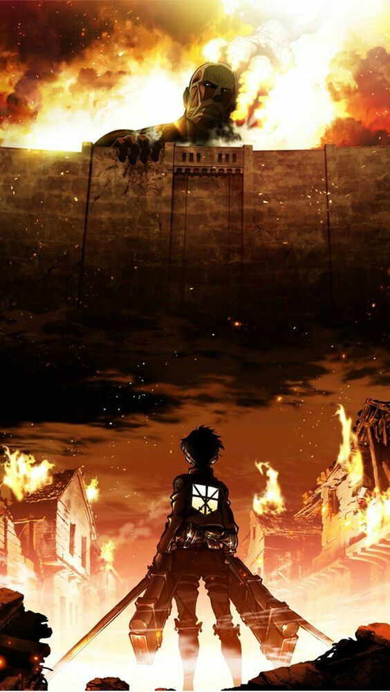
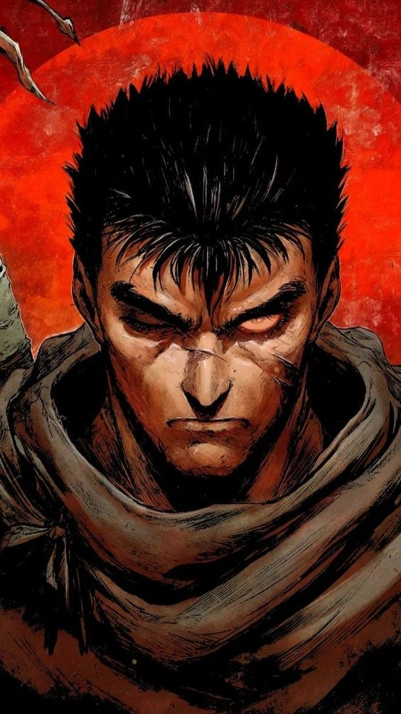
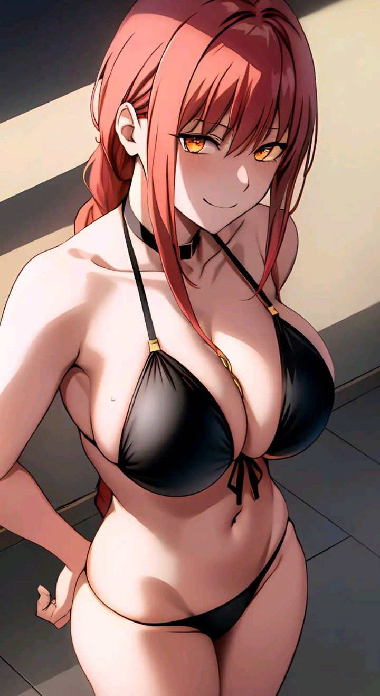
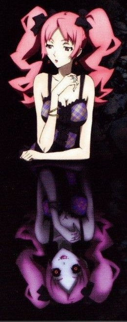
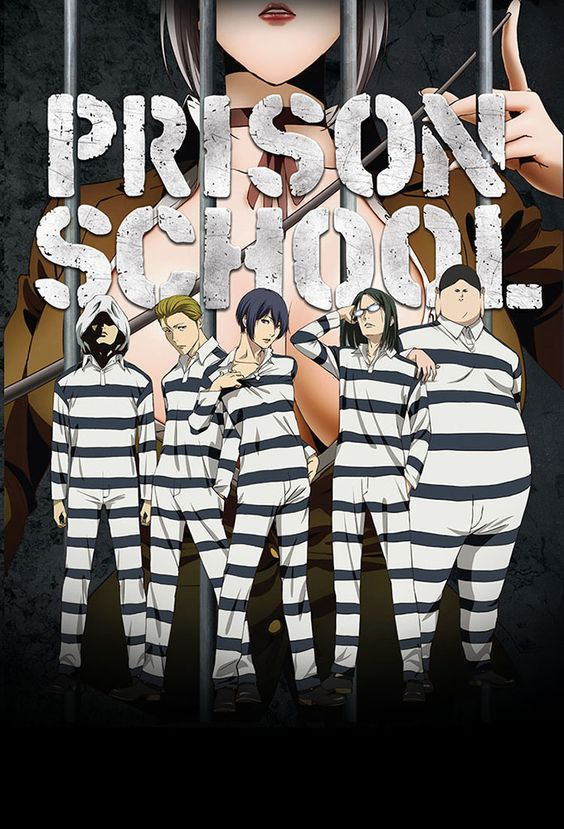

Anime itself dates back over a hundred years. The first confirmed example was produced in 1917 titled Namakura Gatana with a run time of only four minutes. Over time, it has had its highs and lows facing various obstacles both within Japan and internationally. This video by Screen Rant summarizes the history of anime and how it evolved from its 1917 origins to the animation styles we see today. Through its evolution, various artists have pushed the limitations and the stories told with it. The genres within this category are as seemingly limitless as art itself. Many Western audiences have an idea of how typical anime looks. However, the artistry and styles fall onto an also seemingly limitless spectrum dependent on the artists themselves. Despite the varying styles, one thing is certain throughout all of these productions — the process is laborious.
Famous Animes
top 10 animes of all time
oscars winning animes
Akira toriyama
Famous animes
As is the case with any other form of media, watching Japanese anime can be a deeply personal experience, with many series leaving a long-lasting mark on viewers. It's common for fans to take to the internet in support of their favorite series, with sites such as MyAnimeList making it easier than ever for like-minded fans to come together and do so. This allows sites like MyAnimeList to rank the most popular anime of all time according to the fans.
Top 10 Animes of All Time
Note : All these anime are according to me
Death note
"Death Note" is a Japanese manga series written by Tsugumi Ohba and illustrated by Takeshi Obata. It was serialized in the manga magazine Weekly Shonen Jump from 2003 to 2006. The story follows a high school student named Light Yagami who discovers a supernatural notebook called the Death Note. The Death Note has the power to kill anyone whose name is written in it, as long as the writer knows the person's face.
Light initially uses the Death Note to rid the world of criminals and create a utopia free of evil. He adopts the alias "Kira" and gains a massive following of supporters who believe in his cause. However, his actions attract the attention of law enforcement agencies around the world, including the enigmatic detective known only as "L." A cat-and-mouse game ensues between Light and L as they try to outwit each other.
As the series progresses, the conflict between Light and L escalates, with both characters resorting to increasingly elaborate schemes to achieve their goals. The story delves into themes of morality, justice, and the nature of good and evil. Without giving away too many spoilers, the series takes many unexpected twists and turns, leading to a dramatic and thought-provoking conclusion.
Another

Twenty-six years ago, in a third-year classroom of a middle school, there was a student named Misaki. As an honors student who was also good at sports, the charming boy was popular with his classmates. When he suddenly died, his classmates decided to carry on as if he was still alive until graduation. Then, in the spring of 1998, a boy named Sakakibara Kouichi transfers to that classroom, and he grows suspicious of the fearful atmosphere in that classroom. In particular, there is a beautiful, aloof girl named Mei Misaki who wears an eye-patch and is always alone drawing pictures.
After an open-minded, pretty and careful young girl died, one of the classmates decides to keep acting as if she was still alive. After some time, they realize the boy's decision was a big mistake. Later, a new arriving student finds out about a serious curse that would affect everyone if he does not follow very precisely three rules
demon slayers

There was a boy who was very ill and could die any moment. The doctor tried a new medicine which had blue spider lily flower. The medicine was effective, the boy was saved but he turned into a demon. He can't go out in sunlight, has to eat humans etc. He killed the doctor unfortunately. He made many slave demons by injecting his blood in humans and ordered them to find Red spider lily in hope of walking in sunlight again.
Some centuries later, we move on to a village on hill where a family lives. One mother, 3 sons and 3 daughters. The eldest son and daughter names are Tanjiro and Nezuko-our protagonists.
One day while Tanjiro was out to sell coals, Muzan attacked his family and killed everyone except Nezuko who was turned into a demon unintentionally by Muzan. Tanjiro without knowing this rushed his unconscious sister to a hospital but during midway Nezuko became insane and tried to kill Tanjiro. Nezuko stopped when Tanjiro talks to her and asks her to remember her family. But a man named Tomiyoka Giyu- a demon slayer comes to slay her.
Tanjiro begs him to leave his sister while Giyu is thinking if he would have arrived earlier he could have saved his family. As Tanjiro grovel, Giyu screams at him and says to fight for what he wants. Tanjiro attacks Giyu but is knocked out by him, Nezuko rushed to her brother. Giyu thought tha she will eat him but to his surprise she protects him.
When Tanjiro wake up, Giyu send them his master Urokodaki for training. Some years went by and Tanjiro trains under him and his two other students- Sabito and Makomo while Nezuko was slept for all the time. To kill a demon his head must be cut so that he won't regenerate and leave him in sunshine till he vaporizes..
Finally the training ended and Urokodaki gives Tanjiro a fox mask that he gives to all of his students. Tanjiro bids farewell and went for the demon slayer corps exam and says to give his thanks to Sabito and Makomo leaving Urokodaki wondering how Tanjiro knows name of his dead students?
Tanjiro arrives at exam and he has to stay alive in demon forest till morning. Many exam takers already died in few minutes, but Tanjiro was killing demons with his Breath of water after asking whether they know how he can turn his sister back into a human. But none kf demons replied. Then he met a demon with multiple hands who said that he has killed many Urokodaki students and even Sabito and Makomo. Tanjiro then kills him but as he was dying his last memories as human came and he was crying but Tanjiro held his hand as he was feeling his suffering.
Black clover

Black clover is something which we can easily associate to many anime such as Naruto, dragon Ball z and so on. In these anime we see there is a protoganist who is initially an absolute joke of an individual (example Naruto couldn't even do a proper shadow clone, Goku couldn't even beat raditz and had to sacrifice himself to kill me.) Asta is a joke in the beginning. No magic ability, a loud mouth and a pure hearted young man. But as the story goes he gains one unique ability (magic nullification sword) which is only suited for him.
Then his evolution is fast paced where in starts to grow the minute he starts going on mission. Now coming to the anime. The first 10 episodes were very slow where they depict some of the boring things like their journey to the capital city and so on. But from there things get interesting especially with the intro of the black bulls and from there the anime takes a huge leap in excitement.
Attack on titan

After a decade of being on-air and the dust has settled, Attack on Titan is finally over. The long-running anime based on the genre-defining manga by Hajime Isayama has been completed, finishing the story of Eren Yaeger and his lifelong quest for freedom. The anime stuck to its guns and remained mostly faithful to the controversial ending that Isayama used to wrap up this saga, and it's an ending that perfectly sticks to the tone that he has maintained throughout the series: one of cynical empathy, fully embracing humanity's capability for destruction, and that humanity is perhaps doomed to repeat its worst impulses. That cynical empathy is key to how Isayama perfected a story idea that has been attempted many times before, but never to this devastating an effect: the villain origin story.
This binary view of the world gets its greatest test when Eren befriends people like Reiner Braun and Annie Leonhart, who he initially considers to be friends that he fights with in the military; that is, until he learns that they are both Titan shifters who instigated the attack on the city that killed his mother, albeit for a noble purpose. As you can imagine, Eren doesn't take kindly to this, and he throws all of their previous experiences away, in favor of the idea that they couldn't possibly be well-meaning humans with an actual goal in mind. This isn't helped any when Eren and his friends learn the full scope of what has really been going on. Eren and his people are not the last of humanity, but are descendants of a girl named Ymir, the first person to gain Titan powers. Her husband, the King of Eldia, manipulated her into using her Titan powers to conquer the land of Marley, and then used her body to ensure she would have multiple powered offspring in the future. This lasted until one descendant, Karl Fritz, grew disgusted with the Eldian tyranny, and struck a deal with the Marleyan government; this deal was that all Eldians would have their memories wiped and be forced onto an island for the rest of their lives, forever prejudiced against by Marley.
Berserk

Berserk is held in high-esteem as the premier "dark fantasy" series and it definitely lives up to this reputation. Guts is a stoic, suffering warrior who wields a gargantuan blade that nearly verges on the point of parody. Guts' roots depict an honorable soldier, but a lifetime of betrayal and bloodshed hardens him and puts him on a relentless quest for revenge.
The pivotal feud between Guts and former friend, Griffith, is devastating on its own. However, Guts takes on humanity's most vile individuals and malevolent demonic spirits who relish pain and perversion. Many sequences in Berserk, particularly the '17 anime, are genuinely hard to watch. For those who can stomach it, though, this makes Berserk one of the best, darkest anime choices.
While the final fight between Guts and Griffith has yet to begin, fans have recently seen some major changes to the world of the Band of the Hawk, as recent manga chapters have not only brought back Casca to her original fighting glory but have also dived into the origins of the Berserker Armor that has saved the black swordsman's lifetime and time again. With the series first landing as a manga in the 1980s, who is to say how long the dark story will continue before we are finally able to see the manga reach its conclusion.
What do you think of this unique take on one of the first big battles of Berserk? Feel free to let us know in the comments or hit me up directly on Twitter @EVComedy to talk all things comics, anime, and the dark world of Berser
Parasyte : the Maxim
Parasyte (also known as Kiseijuu) goes into full swing with this idea, which is built on the base of a science fiction and body horror story. Actually, it couldn't be easier. There has been an invasion of unknown entities from another world that are capable of infecting humans by parasitic techniques. The parasites may take complete control of you and turn you into a monster if they are able to attach themselves into the brain of a human host.
Not only does this result in the death of the victim, but the creature is now able to feed on more victims. Doesn't it just make your skin crawl? A parasyte infected a young man named Shinichi. It would have ended his life if not for the fact that the parasite messed up and failed. They now share a single body, but maintain their own personalities. They now begin their shared journey throughout the story.
Kiseijuu, which has such an interesting idea, truly raises the bar not just with its initial episodes but also with some of the other technical components that are involved behind the scenes. To begin, there is the powerful studio Madhouse, which is widely well known for their talent as an animation studio.
The original materials also fall under this category. The original manga was published more than twenty years ago, yet it continues to get recognition, which inspired the creation of this anime. Thankfully, it lives up to its reputation.
Chainsaw men

I really love how we see the main protaginist shape the plot throughout the series, watching him grow from day one.From a no good broke ass evil hunter, to a badass chainsaw devil. The irony is sly, and not a lot of people seem to pick up on it. Since season one was short, they give a lot to look forward to in the next season. The idea of devils different devils is similar to other anime, but at the same time it is also different, and unique. I love it.
Also, a lot of people don’t like chainsaw man based on a common opinion, often a misconception to the creators point of view. They point out the major flaws in the characters, such as Denji’s lack of a decent goal.
But since moments like these are common place in the anime and manga, they often forget who exactly denji is. He is the dirt sweeping devil hunter, who sold precious parts of his body to survive. And after all that, he still can’t afford more than a piece of bread to share with his only friend.
Shiki

The Shiki anime is an adaptation of the Shiki manga series drawn by Ryu Fujisaki, which is itself an adaptation of a novel series of the same name by Fuyumi Ono. The story happens in a small isolated town in rural Japan named Sotoba, where a series of bizarre deaths occur, coinciding with the arrival of the Kirishiki family who has just moved into a castle built on the outskirts. Toshio Ozaki, dean of the only hospital in Sotoba, begins to investigate and discovers there are supernatural presences at work, namely vampires, who are called shiki, which translates to English as "corpse demon."
The series premiered on Fuji TV, Kansai TV, Tōkai TV, and their affiliated stations on July 8, 2010. Funimation simulcast the series one hour after its initial broadcast in Japan, with English subtitles. The first of the DVDs and Blu-ray of the anime were released on October 27, 2010 by Aniplex. The complete-series box set, including an English dub and two OVA episodes, came out in June 2014.
Each episode title is a homophone pronunciation for the Japanese numerals using On'yomi, with each phrase mostly related to death or the corruption of the physical body, both common themes in the series. Dates are followed by the Rokuyo designation for that particular day, giving the good-fortune prediction for the day.
Prison School

"Prison School" is a Japanese manga series written and illustrated by Akira Hiramoto. It was adapted into an anime television series in 2015. The story revolves around five male students who enroll at Hachimitsu Academy, a formerly all-girls high school that has recently become co-ed. These five boys are the first male students to attend the school, but they quickly find themselves in trouble.
The boys are caught peeping on the girls' bath and are subsequently imprisoned in the school's prison, a harsh and strict detention facility run by the Underground Student Council. The series follows the boys' attempts to escape from the prison and navigate the challenges and absurd situations they face.
"Prison School" is known for its comedic elements, over-the-top scenarios, and fanservice. It combines elements of comedy, ecchi (provocative content), and romance, often with a focus on the interactions between the male and female characters. The series is known for its risqué humor and exaggerated depictions of the characters and their predicaments.
Overall, "Prison School" is a mix of comedy, romance, and ecchi elements set in a unique school setting, with a focus on the misadventures of the main characters as they try to navigate their unusual circumstance
 As is the case with any other form of media, watching Japanese anime can be a deeply personal experience, with many series leaving a long-lasting mark on viewers. It's common for fans to take to the internet in support of their favorite series, with sites such as MyAnimeList making it easier than ever for like-minded fans to come together and do so. This allows sites like MyAnimeList to rank the most popular anime of all time according to the fans.
As is the case with any other form of media, watching Japanese anime can be a deeply personal experience, with many series leaving a long-lasting mark on viewers. It's common for fans to take to the internet in support of their favorite series, with sites such as MyAnimeList making it easier than ever for like-minded fans to come together and do so. This allows sites like MyAnimeList to rank the most popular anime of all time according to the fans.
 "Death Note" is a Japanese manga series written by Tsugumi Ohba and illustrated by Takeshi Obata. It was serialized in the manga magazine Weekly Shonen Jump from 2003 to 2006. The story follows a high school student named Light Yagami who discovers a supernatural notebook called the Death Note. The Death Note has the power to kill anyone whose name is written in it, as long as the writer knows the person's face.
Light initially uses the Death Note to rid the world of criminals and create a utopia free of evil. He adopts the alias "Kira" and gains a massive following of supporters who believe in his cause. However, his actions attract the attention of law enforcement agencies around the world, including the enigmatic detective known only as "L." A cat-and-mouse game ensues between Light and L as they try to outwit each other.
As the series progresses, the conflict between Light and L escalates, with both characters resorting to increasingly elaborate schemes to achieve their goals. The story delves into themes of morality, justice, and the nature of good and evil. Without giving away too many spoilers, the series takes many unexpected twists and turns, leading to a dramatic and thought-provoking conclusion.
"Death Note" is a Japanese manga series written by Tsugumi Ohba and illustrated by Takeshi Obata. It was serialized in the manga magazine Weekly Shonen Jump from 2003 to 2006. The story follows a high school student named Light Yagami who discovers a supernatural notebook called the Death Note. The Death Note has the power to kill anyone whose name is written in it, as long as the writer knows the person's face.
Light initially uses the Death Note to rid the world of criminals and create a utopia free of evil. He adopts the alias "Kira" and gains a massive following of supporters who believe in his cause. However, his actions attract the attention of law enforcement agencies around the world, including the enigmatic detective known only as "L." A cat-and-mouse game ensues between Light and L as they try to outwit each other.
As the series progresses, the conflict between Light and L escalates, with both characters resorting to increasingly elaborate schemes to achieve their goals. The story delves into themes of morality, justice, and the nature of good and evil. Without giving away too many spoilers, the series takes many unexpected twists and turns, leading to a dramatic and thought-provoking conclusion.
 Parasyte (also known as Kiseijuu) goes into full swing with this idea, which is built on the base of a science fiction and body horror story. Actually, it couldn't be easier. There has been an invasion of unknown entities from another world that are capable of infecting humans by parasitic techniques. The parasites may take complete control of you and turn you into a monster if they are able to attach themselves into the brain of a human host.
Not only does this result in the death of the victim, but the creature is now able to feed on more victims. Doesn't it just make your skin crawl? A parasyte infected a young man named Shinichi. It would have ended his life if not for the fact that the parasite messed up and failed. They now share a single body, but maintain their own personalities. They now begin their shared journey throughout the story.
Parasyte (also known as Kiseijuu) goes into full swing with this idea, which is built on the base of a science fiction and body horror story. Actually, it couldn't be easier. There has been an invasion of unknown entities from another world that are capable of infecting humans by parasitic techniques. The parasites may take complete control of you and turn you into a monster if they are able to attach themselves into the brain of a human host.
Not only does this result in the death of the victim, but the creature is now able to feed on more victims. Doesn't it just make your skin crawl? A parasyte infected a young man named Shinichi. It would have ended his life if not for the fact that the parasite messed up and failed. They now share a single body, but maintain their own personalities. They now begin their shared journey throughout the story.